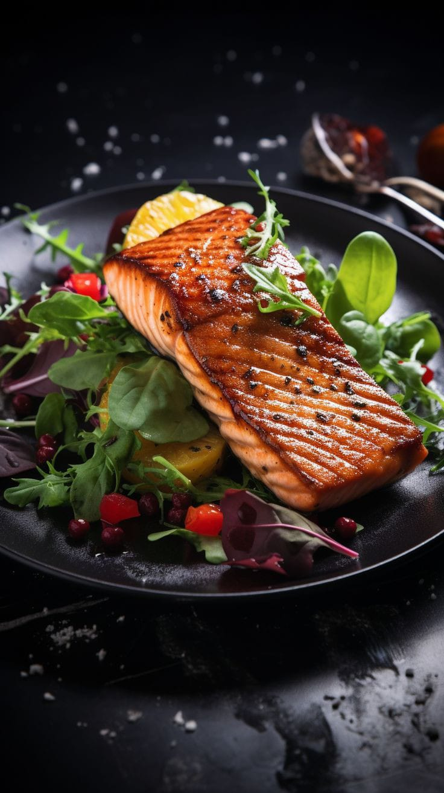
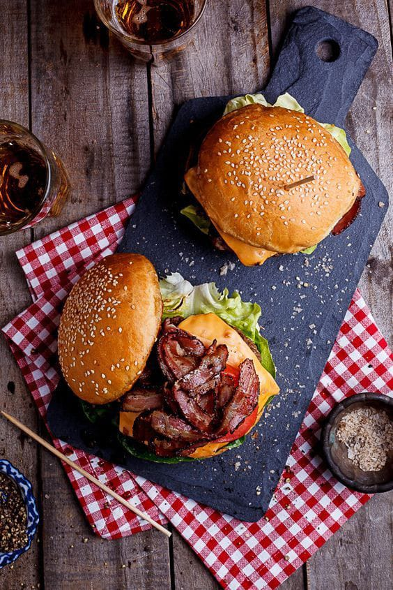

FLAIR MARKETING
¿Que es?
La creación legal de una empresa es crucial por varias razones:
-
1. Cumplimiento Legal: Evita problemas legales y sanciones al operar dentro del marco legal establecido.
2. Protección del Patrimonio Personal: Limita la responsabilidad financiera de los propietarios frente a dificultades empresariales.
3. Credibilidad: Inspira confianza en clientes y proveedores, facilitando relaciones comerciales y obtención de créditos.
4. Planificación y Gestión: Facilita la planificación estratégica, gestión interna y definición de responsabilidades.
5. Atracción de Inversiones y Talento: Atrae inversores y profesionales al ofrecer seguridad y estabilidad.
Flair Marketing
Es una microempresa de marketing, especializada en la publicidad y promoción a restaurantes en la ciudad de Barranquilla. Pertenece a: régimen común Se encuentra registrada como: persona Jurídica Es una empresa de carácter privado Ubicado en Barranquilla, Colombia
¿Quienes somos?
Somos Flair Marketing, una empresa de marketing digital con sede en Barranquilla, Colombia. Nos destacamos por ofrecer servicios creativos y personalizados de gestión de redes sociales y creación de contenido. Nuestra misión es garantizar un servicio de calidad que impulse el crecimiento y la visibilidad de nuestros clientes. Valoramos la ética, la transparencia y la flexibilidad en nuestro trabajo, y nos comprometemos a promover el respeto, la empatía, la sostenibilidad y la excelencia. Buscamos ser líderes en estrategias de marketing digital efectivas y contribuir al desarrollo sostenible, especialmente en áreas como la igualdad de género y el trabajo decente.
Vision
Para el año 2030 buscamos ser reconocidos como líderes en
la creación de estrategias de marketing digital innovadoras y
efectivas que impulsen el éxito de nuestros clientes en un
mundo digitalmente conectado.
Mision
Promover y garantizar un servicio de calidad, ofreciendo una
atención personalizada y creativa para el manejo de redes
sociales y creación de contenido de forma única e innovadora
que impulsen el crecimiento y la visibilidad de nuestros
clientes.
Principios que cumple la empresa.
La creación legal de una empresa es crucial por varias razones:
- 1. Fomentar la ética y transparente para el manejo de
información.
- 2. Promover una buena atención al cliente.
- 3. Fomentar la creatividad y originalidad en la creación
de ideas y soluciones de marketing.
- 4. Priorizar la flexibilidad, siendo capaces de adaptarnos
rápidamente a las necesidades cambiantes del
mercado y de cada cliente.
Valores empresariales y ODS que cumple la empresa.
Valores empresariales:
- Respeto.
- Empatía.
- Sostenibilidad.
- Compromiso.
- Responsabilidad.
- Excelencia
que cumplimos:
- Igualdad de género.
- Trabajo decente y crecimiento económico.
Jorge de AvilaDepartamento de gerencia |
Nahiara DangondDepartamento de contabilidad o ´Acceso Contable´ |
Juliana RadaDepartamento de creacion de contenido |
Valeria GonzálezDepartamento de relacion con clientes |
Valores empresariales y ODS que cumple la empresa.
Valores empresariales:
-
Instagram, Tiktok y Facebook: Se manejan
las diferentes publicaciones, anuncios y
publicidad de las redes de la empresa
(restaurantes). Desde 250,000 por día.
Uso de espacios.
-
Uso de espacios habilitados en la empresa: 200,000 semanal.
Creación de videos.
- Elaboración de videos de quince segundos: Desde 100,000.
- laboración de videos de un minuto: Desde 200,000.
Manejo de publicaciones o comentarios.
- Manejo de publicaciones en una sola red social: 100,000 por aplicación
- Manejo de comentarios en una sola red social: 50,000 por aplicación.
"Aspectos politicos, economicos,
sociales y tecnologicos que
conforman a la empresa y su entorno"
Hay cuatro factores fundamentales que
impulsan el desarrollo productivo de
nuestra empresa: la creación de utilidades
a partir de objetivos internos, la
funcionalidad del marketing, la
diferenciación empresarial y la
conformidad con la normatividad. Estos
aspectos destacan la importancia de
satisfacer las necesidades del público
objetivo, ofrecer innovación y cumplir con
las regulaciones, contribuyendo así al éxito
y la relevancia de nuestra empresa en el
entorno social y económico.
Operatividad
- Ley de Protección de Datos Personales (Ley 1581 de 2012)
- Ley de Competencia Desleal (Ley 256 de 1996)
- Código de Comercio
- Ley de Protección al Consumidor (Ley 1480 de 2011)
- Ley de Propiedad Intelectual (Ley 23 de 1982)
Constitución legal de la empresa.
01Se escoge el nombre de la empresa  |
02Se escoge que la empresa sea registrada como persona jurídica. 
|
03Verificación del nombre en el Registro Único Empresarial y Social - RUES. |
04Verificar que se puede ejercer la actividad en el lugar que se escogió (uso del suelo). |
05Revisar que actividades económicas (CIIU) se van a realizar.  |
06Verificar los datos para la asignación del RUT 
|
Constitución legal de la empresa.
07Matricula en la Cámara de Comercio a través de la Ventanilla Única Empresarial (VUE). |
08Una vez inscrito, hay que comprar el certificado de matrícula que acredita como comerciante. |
09Después de cumplir con todos estos requisitos, |
10Hay varios aspectos tributarios que se deben |
"Aspectos politicos, economicos,
sociales y tecnologicos que
conforman a la empresa y su entorno"
‘Flair Marketing’ es una pequeña empresa localizada en
Barranquilla, Colombia. Es una empresa especializada en la
prestación de servicios de marketing digital enfocados en la
administración de redes sociales para restaurantes locales. La
empresa busca resaltar por su enfoque innovador en la
creación de contenido y por ofrecer un servicio creativo y de
calidad, con el objetivo de proporcionar una atención
personalizada.